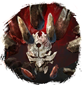

Открыть в интерактивной вики →
| Уровень | 110 |
|---|---|
| Сила (PvE) | норм. 6171 / тяжел. 9683 |
| Аспект арены | Velhar |
| Здоровье | 26 000 |
| Мана | 15 000 |
| Выносливость | 22 000 |
Команда


Дроп


Статистика
 |  |  | |||
| Уровень: 90 | Уровень: 110 | Уровень: 140 | |||
Здоровье: 13 000 Мана: 15 000 Выносливость: 22 000 | Здоровье: 20 000 Мана: 15 000 Выносливость: 22 000 | Здоровье: 34 000 Мана: 15 000 Выносливость: 22 000 |
Умения
| Критический Удар Таран Ранение Обычная атака | Боевой Клич Паника |
Иммунитеты / особые умения
-
Локация
Лаборатория Аква Регис